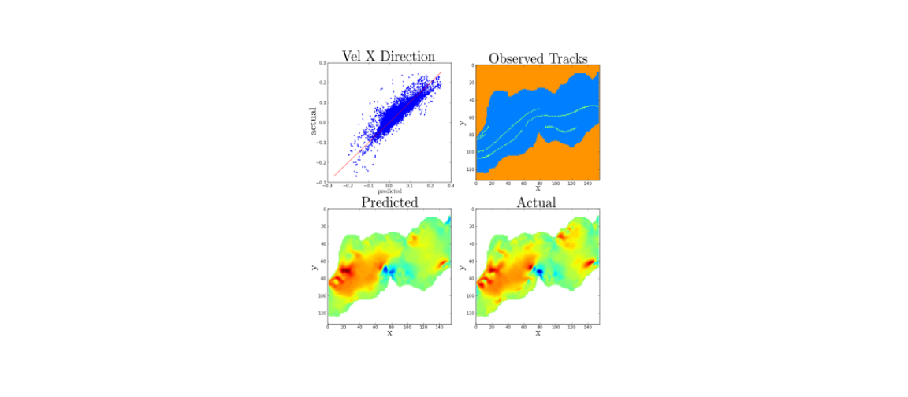
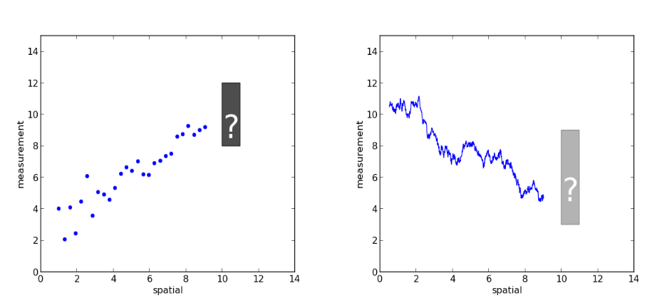
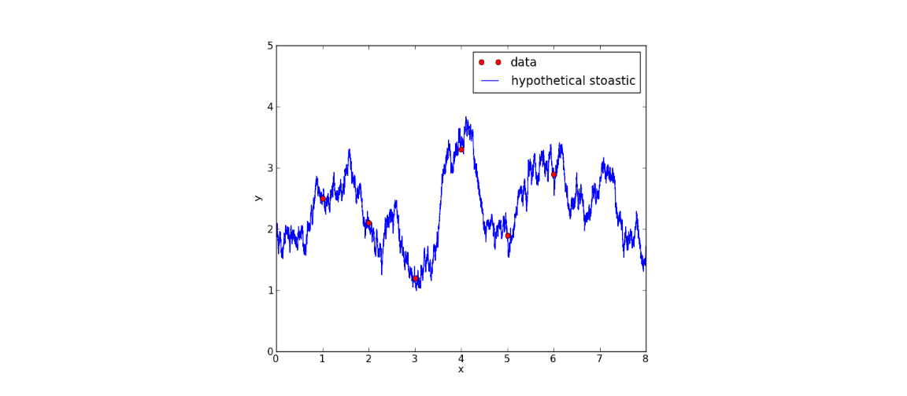
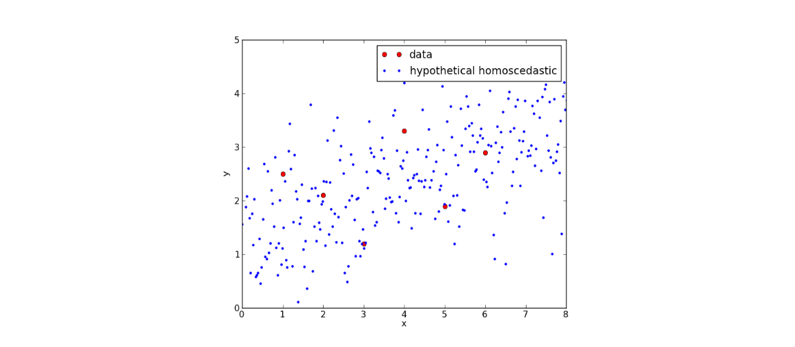
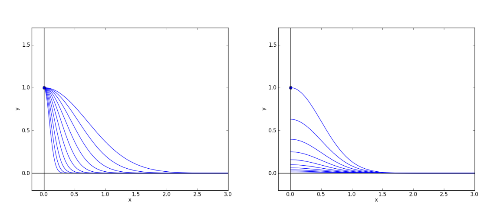
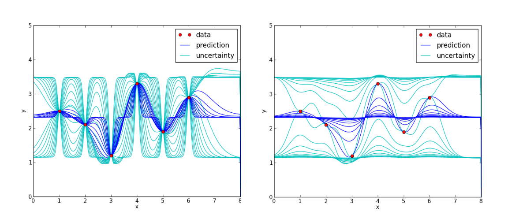
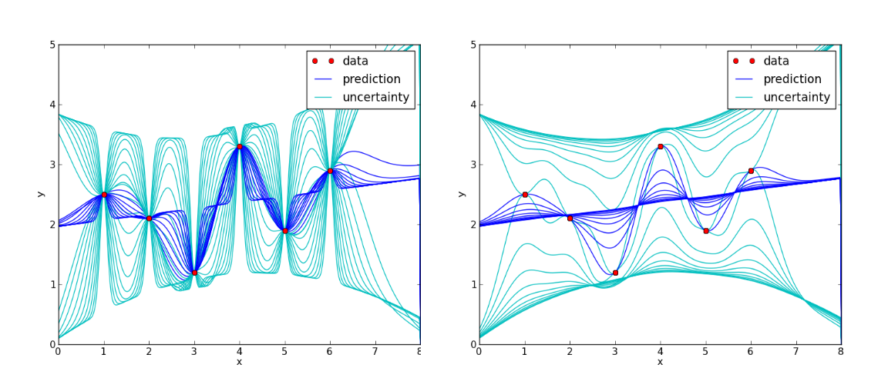
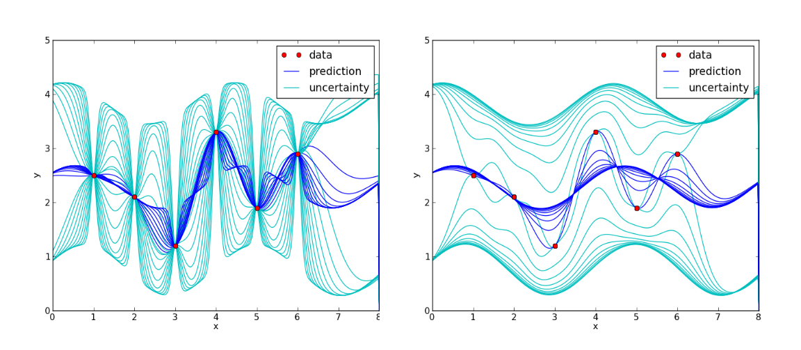

1 / 9

Working on an easy to deploy method for ocean current from observed buoy tracks, we utilized Kriging as a general and straightforward method of predicting stationary random fields from limited observations. Yet, we want to use more of the information provided by ensemble forecasts or other simulations. Optimal interpolation offers a lightweight method for combining prior knowledge with data.
2 / 9

Linear regression seems to be the most widely utilized method from linear statistics. This method's setting is when independent variables plus identically and independently distributed noise combine to create a dependant variable. When random fields are spatially correlated, Kriging methods become appropriate. A wealth of methods intermix the methods of and assumptions of Kriging and linear regression. Optimal interpolation and BLUP (best linear unbiased prediction) are two methods that combine detailed regressors and expected measurement covariance.
3 / 9

For a small number of observations, indicated by red dots, an underlying process could be a spatially correlated random field.
4 / 9

Or, an identical data set could arise from a linear trend plus independently distributed noise.
5 / 9

These covariograms will help illustrate the flexibility of optimal interpolation. The x-axis is the absolute difference in the dependant variable between two data points. The y-axis is the expected covariance between stationary random field values at locations separated by x. A family of blue lines indicates varying degrees of spatial covariance. Independent noise corresponds to a single blue dot on the y-axis at x=0 and zero covariance everywhere else. The left and right illustrate different transitions from the assumption of spatial correlation to independent noise.
6 / 9

With a lone regressor equal to a constant offset, optimal interpolation is equivalent to ordinary Kriging. There is no "true" or correct underlying process. The red dots are the same made-up data throughout this slideshow. Dark blue lines indicate the expected values, and light blue indicates confidence intervals. The family of ten lines in each panel demonstrates the variety of predictions arising from the covariograms in the previous slide.
7 / 9

Here, we include a linear trend regressor.
8 / 9

Now, a second-order polynomial is allowed.
9 / 9

We have yet to discuss any empirical considerations, but in this graphic a trigonometric function has been used as a regressor. Prior information about any cyclic structure may enter into the regressors.
As a hypothetical, consider having access to ensemble weather forecast data. Empirical orthogonal functions or principal component analysis can approximate the structure and variability of large-scale weather patterns and provide regressors. Then the residual variation of the ensemble forecasts can guide the choice or design of covariograms.
State of the art data assimilation for weather models requires the collaboration of experts in multiple scientific fields. In contrast, the approach suggested here is tractable for a single researcher. Optimal interpolation can bring much of the information from the ensemble forecasts to bear on observations' assimilation.